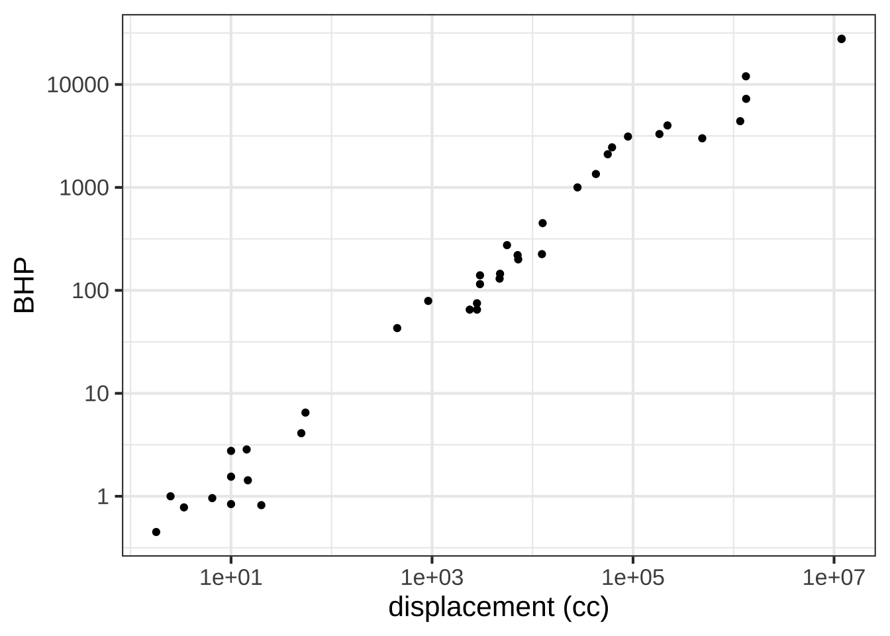

18 Computing derivatives
To differentiate a function \(g(x)\) means simply to produce the corresponding function \(\partial_t g(x)\). This is often called “finding the derivative,” language that resonates with the high-school algebra task of “finding \(x\).” Rather than conjuring an image of search high and low for a missing function, it’s more realistic to say, “compute the derivative.”  2150
2150
In this chapter we’ll introduce two ways of computing a derivative. For simplicity we will write \(x\) for the with-respect-to-variable, although in practice you might be using \(t\) or \(z\) or something else. 2155
- Symbolic differentiation, which uses a set of re-writing rules
- Finite-differencing, which is based directly on the differencing operator \({\cal D_x}\)
In the days when functions were always presented using formulas, symbolic differentiation was usually the only method taught. Nowadays, when functions are just as likely to be described using data and an algorithm, finite-differencing provides the practical approach. 2160
18.1 A function from a function
Recall that the goal of differentiation is to make a function out of an already known function. We’ll call the already known function \(g(x)\). In Chapter 17 we’ve outlined the properties that the new function should have and gave a nice naming convention, \(\partial_x g(x)\) that shows where the new function comes from. In this section we’ll put that aside and focus on the question of what it means to “make a function.” 2165
When mathematics is done with paper and pencil, “making a function” is a matter of writing a formula, such as \(x^2 \sin(x) + 3\) and sometimes giving a name to the formula, e.g. \(h(x) \equiv x^2 \sin(x) + 3\). We are essentially writing something down that will make sense when viewed by another person trained in the conventions of mathematical notation. 2170
For a computer, on the other hand, a function is a definite kind of thing. We “make a function” by creating that kind of thing and, usually, giving it a name. We use (or “evaluate”) a function by using a definite syntax, which in R involves the use of parentheses, for instance name(input). 2175
The computer language itself provides specific means to define a new function. In R/mosaic, you first construct a tilde expression naming the function inputs (right side of the tilde) and specifying the algorithm of that function (left side of the tilde), as with this formula:
f_description <- x^2 * sin(x) + 3 ~ x # a tilde expressionOn its own, f_description cannot be used like a function because it was constructed as something else: a tilde expression. Trying to use f_description in the way one uses a function produces an error.
f_description(2)
Error in f_description(2): could not find function "f_description"In between the tilde expression and the final result—a function—is software that translates from tilde-expressions into functions:
f <- makeFun(f_description)The new creation, f() can now be used like any other function, e.g.
f(2)## [1] 6.63719Down deep inside, makeFun() uses a more basic function-creation syntax which looks like this
function(x) {x^2 * sin(x) + 3}## function(x) {x^2 * sin(x) + 3}You can see all the same information that was in the tilde description, just arranged differently.
Almost every computer language provides something like function. There workings are advanced technology and essentially impossible to describe in much the same way as the workings of a transistor or a COVID vaccine are known only to specialists. 2180
In the same spirit as makeFun(), which translates a tilde-expression into the corresponding function, in R/mosaic you have D() which takes a tilde expression and translates it into the derivative of the function described. For example:
D(f_description)## function (x)
## 2 * x * sin(x) + x^2 * cos(x)Exercise 18.1: kelwx
The most common programming pattern in the R/mosaic calculus commands is:
Operator(tilde_expression, [optional details])
Some operators: slice_plot(), contour_plot, make_Fun(), D(), antiD(), findZeros()
For each of the R/mosaic expressions, determine which kind of thing is being created. Feel free to run the expressions in a SANDBOX.
Question A
makeFun(a*x - b ~ x)
- a function of
x︎✘ Fair enough. But the function also has argumentsaandb
- a function of
x,a, andbExcellent!
- a tilde expression ︎✘ The tilde expression is the input to the operator. The operator translates the tilde expression into something else.
- a plot ︎✘
- a data frame ︎✘
- an error ︎✘
Question B
- a function of
a︎✘
- a function of
x,a, andbNice!
- a tilde expression ︎✘
- a plot ︎✘
- a data frame ︎✘
- an error ︎✘
Question C
antiD(a*x - b ~ x)
- a function of
a︎✘
- a function of
x,a, andbExcellent!
- a tilde expression ︎✘
- a plot ︎✘
- a data frame ︎✘
- an error ︎✘
Question D
slice_plot(a*x - b ~ x, domain(x=c(0,5)))
- a function of
x︎✘
- a function of
x,a, andb︎✘
- a tilde expression ︎✘
- a plot ︎✘ The expression is intended to make a plot, but it doesn’t work. Specific numerical values would need to be provided for
aandb.
- a data frame ︎✘
- an error Excellent!
Question E
f <- makeFun(a*x + b ~ x, a=2, b=-4)
slice_plot(f(x) ~ x, domain(x=c(0,5)))
- a function of
x︎✘
- a function of
x,a, andb︎✘
- a tilde expression ︎✘
- a plot Good. This works because there are specific values provided for the
aandbparameters.
- a data frame ︎✘
- an error ︎✘
Question F
findZeros(a*x - b ~ x, domain(x=c(0,5)))
- a function of
x︎✘
- a function of
x,a, andb︎✘
- a tilde expression ︎✘
- a plot ︎✘ The expression is intended to make a data frame, but it doesn’t work. Specific numerical values would need to be provided for
aandb.
- a data frame ︎✘
- an error Good.
Question G
a*x - b ~ x
- a function of
x︎✘
- a function of
x,a, andb︎✘
- a tilde expression Good.
- a plot ︎✘ The expression is intended to make a plot, but it doesn’t work. Specific numerical values would need to be provided for
aandb.
- a data frame ︎✘
- an error ︎✘
Question H
f <- makeFun(a*x + b ~ x, a=2, b=-4)
findZeros(f(x) ~ x)
- a function of
x︎✘
- a function of
x,a, andb︎✘
- a tilde expression ︎✘
- a plot ︎✘
- a data frame Correct.
- an error ︎✘
Question I Suppose you create a function in the usual way, e.g. f <- makeFun(a*x + b ~ x, a=2, b=-4). Which of the following will plot a straight-line function with a slope of 5.
-
slice_plot(f(x) ~ x, domain(x=c(-5, 5)))︎✘ The default value ofais 2, so the line would have a slope of 2.
-
slice_plot(f(x, b=2), domain(x=c(-5, 5))︎✘ It’sathat is the slope parameter.
-
slice_plot(f(x, a=2), domain(x=c(-5, 5))Excellent!
18.2 Finite differencing
You can use the definition of the slope function \[{\cal D}_x f(x) = \frac{f(x+0.1) - f(x)}{0.1}\] to create an approximation to the derivative of any function. Like this:
Whenever you calculate a derivative function, you should check against mistakes or other sources of error. For instance, whenever the derivative is zero, the original function should have an instantaneous slope of zero. Figure 18.1 shows a suitable plot for supporting this sort of check.
zeros_of_dg <- findZeros(dg(x) ~ x, xlim=c(-5,5))
slice_plot(g(x) ~ x, domain(x=c(-5,5)), npts=500) %>%
slice_plot(dg(x) ~ x, color="tan", npts=500) %>%
gf_hline(yintercept = ~ 0, color = "orange", size=2, alpha=0.2) %>%
gf_vline(xintercept = ~ x, data=zeros_of_dg, color="blue")
Figure 18.1: A check that zero-crossings (blue) of the derivative function (tan) correspond to inputs where the original function is flat (black).
Look very closely at Figure 18.1, particularly at the places where the blue vertical markers cross the function \(g(x)\) (black). They should cross exactly at the flat zone, but they are a little shifted to the left. (You might have to zoom in on the plot to see the offset between the vertical blue marker and the local maximum of the function.) That’s the sense in which the finite-difference approach gives an approximation. The small left-shift stems from the use of 0.1 in the definition of the zero function. Use a smaller value, say 0.01 or 0.001, and you won’t be able to see the shift at all. 2185
In modeling work, there’s nothing wrong with an approximation so long as it is good enough for your purposes. We picked the value 0.1 for our definition of the slope function because it works very well with the pattern-book functions. Here, “very well” means you can’t easily see in the graph any deviation compared the the exact derivative. 2190
When a calculation can be done exactly (without outrageous effort) it certainly makes sense to use the exact method. However:
- It’s useful to have an easy, approximate method always at hand. This lets you check the results of other methods against the possibility of some blunder or mis-conception. The slope function approach to differentiation is certainly easy, and if you think the approximation isn’t good enough, then instead of 0.1 use something smaller. (Chapter 21 discusses how small is too small.)
- The computer makes it practical to employ the slope function as a useful approximation to the derivative. There are many other mathematical methods that the computer has made feasible, for instance the methods of machine learning. These methods create functions that sometimes cannot be handled by the traditional (“exact”) methods of differentiation. 2195
Exercise 18.2: K05LrF
As you know, given a function \(g(x)\) it’s easy to construct a new function \({\cal D}_x g(x)\) that will be an approximation to the derivative \(\partial_x g(x)\). The approximation function, which we call the slope function, can be \[{\cal D}_x g(x) \equiv \frac{g(x + 0.1) - g(x)}{0.1}\]
Open a SANDBOX and use makeFun() to create a function \(g(x) \equiv \sin(x)\) and another that will be the slope function, called it slope_of_g().
g <- makeFun(sin(x) ~ x)
slope_of_g <- makeFun( _your_tilde_expression_here )Question A What’s the value of slope_of_g(1)?
0.3749 ︎✘ 0.4973 Excellent! 1.3749 ︎✘ 1.4973 ︎✘
Using your sandbox, plot both g() and slope_of_g() (in blue) on a domain \(-5 \leq x \leq 5\). This can be done with slicePlot() in the following way:
slice_plot(g(x) ~ x, domain(x=c(-5,5))) %>%
slice_plot(slope_of_g(x) ~ x, color="blue") Question B Which of these statements best describes the graph of \(g()\) compared to
Question B Which of these statements best describes the graph of \(g()\) compared to slope_of_g()?
-
slope_of_g()is shifted left by about \(\pi/2\) compared tog(x). Good.
-
slope_of_g()is shifted left by about \(\pi\) compared tog(x). ︎✘
-
slope_of_g()has a larger amplitude thang()︎✘
- The output of
slope_of_g()is always positive ︎✘
-
slope_of_g()is practically the same function asg(). That is, for any input the output of the two functions is practically the same. ︎✘
Exercise 18.3: n78LrF
As you know, given a function \(g(x)\) it’s easy to construct a new function \({\cal D}_x g(x)\) that will be an approximation to the derivative \(\partial_x g(x)\). The approximation function, which we call the slope function, can be \[{\cal D}_x h(x) \equiv \frac{h(x + 0.1) - h(x)}{0.1}\]
Open a SANDBOX and use makeFun() to create a function \(h(x) \equiv e^x\) and another function called slope_of_h() using the definition of \({\cal D} h(x)\).
h <- makeFun(exp(x) ~ x)
slope_of_h <- makeFun( _your_tilde_expression_here_ )Question A What’s the value of slope_of_h(1)?
0.3749 ︎✘ 0.7183 ︎✘ 1.3749 ︎✘ 1.7183 ︎✘ 2.7183 Good.
Using your sandbox, plot both h() and slope_of_h() (in blue) on a domain \(-1 \leq x \leq 1\). This can be done with slicePlot() in the following way:
slice_plot(h(x) ~ x, domain(x=c(-1,1))) %>%
slice_plot(slope_of_h(x) ~ x, color="blue")Question B Which of these statements best describes the graph of \(h()\) compared to slope_of_h()?
-
slope_of_h()is negative compared toh(x). Correct.
-
slope_of_h()is shifted left by about \(1\) compared toh(x). ︎✘
-
slope_of_h()has a much smaller amplitude thanh(). ︎✘
-
slope_of_h()is practically the same function ash(). That is, for any input the output of the two functions is practically the same. ︎✘
18.3 The slope-function operator
Take a look at the statement we used to construct the slope function of g():
dg <- makeFun((g(x+0.1) - g(x))/0.1 ~ x)There’s almost nothing about this statement that has anything to do with the specifics of how we defined g(); we could have used any \(g()\). The “almost” in the previous sentence is about the choice of 0.1, which isn’t guaranteed to be small enough. 2200
It would be convenient to have an operator that automates the process of constructing a slope function. This is a programming task and in that sense beyond the scope of this course. Still, it’s a good idea to get in the habit of reading programming code. So here goes … creating a slopeFun() operator: 2205
- Remember the
function(){}syntax for creating an operator. (If I were speaking to experienced programmers, I would have said “function” instead of “operator.” ) - We’re going to use a tilde expression as the input to
slopeFun(). This is how the other R/mosaic operators work. That will be easier to the user and will also give us access to those other operators if we need them in writingslopeFun(). - The object returned by the
slopeFun()operator will be, of course, a function. We’ve been usingmakeFun()to make our mathematical functions, so expect to see that in the code forslopeFun(). - There’s the matter of whether 0.1 is small enough. So let’s use an
hargument in place of 0.1 that we can change when needed.
Putting this together, here is a slopeFun() operator that takes a tilde expression (like makeFun() and slice_plot()) and produces a new mathematical function that is the slope function for the mathematical function described in the tilde expression. (There are a couple of R programming elements in slopeFun() that you aren’t expected to understand completely. But do try reading the code to see what sense you can make of it.)
slopeFun <- function(tilde, h=0.1) { #two arguments, one with a default value
g <- makeFun(tilde) # Turn the tilde expression into a function
makeFun((g(x + h) - g(x))/h ~ x, h=h) # just like before, with h instead of 0.1
}Figure 18.2 provides a quick check of whether the function works and whether h=0.1 is small enough. Since the tan curve runs right through the middle of the black curve, we have a good indication that \(h = 0.001\) is just as good as \(h = 0.00000000001\).
dx_sin <- slopeFun(sin(x) ~ x)
slice_plot(dx_sin(x, h = 0.00000000001) ~ x, domain(x=c(-5,5)), size=2) %>%
slice_plot(dx_sin(x, h=0.001) ~ x, color="tan")
Figure 18.2: Checking whether the homemade slopeFun() operator works.
::: {.scaffolding}
You can decide for yourself whether the tan and black curves in Figure 18.2 are similar enough for your purposes. Even better, do some exploring yourself in a SANDBOX. You’ll have to copy and paste into your sandbox both the code defining slopeFun() and the graphics statements. Start by replacing dx_sin(x, h=0.1) by dx_sin(x, h=0.0001) 2210
Exercise 18.4: l2ksw
On the computer (and in using data), you can set \(h\) too small in the slope function. This will become obvious in the graph when \(h\) is too small. Start adding zeros in sin(x, h=0.0001) until you see the problem.
Question A Which of these values for h is the smallest you can go before the problems of too-small h start showing up?
-
h=0.00001︎✘
-
h=0.00000001︎✘
-
h=0.00000000001Nice!
-
h=0.00000000000001︎✘ Not a bad choice, but if you look closely you’ll see little wobbles in the curve.
-
h=0.000000000000000001︎✘
In practice, you won’t need to use slopeFun(). You’ll use D() instead, which gives the “exact” results whenever it can.
18.4 Symbolic differentiation
Symbolic differentiation is the process of taking a formula and translating it to a new formula according to certain patterns or rules. Each rule is ultimately derived from the definition of the slope function and the differencing operator. 2215
As you recall, the differencing operator \(\diff{x}\) turns a function into its slope function \[\diff{x} f(x) \equiv \frac{f(x+h) - f(x)}{h}\]
Let’s look at one where we already know the result: The straight line function \(\line(x) \equiv a x + b\) has a slope function that is constant: \(\diff{x}\line(x) = a\)
\[\diff{x}\line(x) = \frac{a (x+h) + b - (a x + b)}{h} = \frac{ah}{h} = a\]
The derivative is the slope function with \(h\) made as small as possible. It’s tempting to think of this as \(h = 0\), but that would imply dividing by zero in the differencing operator. Being cautious about this, we write that differentiation is differencing with \(h \rightarrow 0\), or 2220
\[\partial_x \line(x) \equiv \lim_{h\rightarrow 0} \frac{\line(x+h) - \line(x)}{h} =\\ \ \\ = \lim_{h\rightarrow 0} \frac{a h}{h} = a\]
This derivation is unarguably correct for any non-zero \(h\).
This short derivation gives us a basic differentiation rule which we can divide into 3 special cases.
-
Line rule: \(\partial_x ax + b = a\)
- \(\partial_x ax = a\)
- \(\partial_x b = 0\)
- \(\partial_x x = 1\)
Remember that \(\partial_x f(x)\) is always a function no matter what kind of function \(f(x)\) is. The functions associated with the line rule are all constant functions, meaning the output doesn’t depend on the input.
Only for the \(\line()\) function and its three special cases is the derivative a constant function. And \(\line()\) is the only function for which the \(h\) in the differencing operator disappears on its own. For instance, consider the square function: \(g(x) \equiv x^2\). 2225
\[\partial_x [x^2] = \lim_{h\rightarrow 0}\frac{(x+h)^2 - x^2}{h} =\\ \ \\ =\lim_{h\rightarrow 0}\frac{(x^2 + 2 x h + h^2) - x^2}{h} =\\ \ \\ = \lim_{h\rightarrow 0}\frac{2 x h + h^2}{h} =\\ \ \\ =\lim_{h\rightarrow 0} [2x + h]\] It’s accepted that the limit of a sum is the sum of the limits. Also, the limit of something not involving \(h\) is just that thing: for instance \(\lim_{h\rightarrow 0}2x = 2x\).
\[\partial_x [x^2] = 2x + \lim_{h\rightarrow 0}h = 2x\]
We’ll write this as another differentiation rule.
- Quadratic rule: \(\partial_x [x^2] = 2x\)
Let’s take on the exponential function \(h(x) \equiv e^x\):
\[\partial_x e^x = \lim_{h\rightarrow 0}\frac{e^{x+h} - e^x}{h} = e^x \lim_{h\rightarrow 0}\left[\frac{e^h - 1}{h}\right]\] At a glance, it can be hard to know what to make of \(\lim_{h\rightarrow 0} (e^h-1)/h\). Setting \(h=0\) in the denominator is perfectly legitimate and gives \(e^0 - 1 = 0\). But that still leaves the \(h\) in the numerator. Still, for any non-zero \(h\), the division is legitimate, so let’s see what happens as \(h \rightarrow 0\):
f <- makeFun((exp(h) - 1)/h ~ h)
f(0.1)## [1] 1.051709
f(0.01)## [1] 1.005017
f(0.001)## [1] 1.0005
f(0.0001)## [1] 1.00005
f(0.0000001)## [1] 1
f(0.0000000001)## [1] 1Setting \(h\) exactly to zero, however, won’t work: it produces NaN.
f(0)## [1] NaNSince \(\lim_{h\rightarrow 0} (e^h-1)/h = 1\), we have
- Exponentiation rule: \(\partial_x e^x = e^x\)
Still another example: the reciprocal function, written equivalently as \(1/x\) or \(x^{-1}\)
\[\partial x^{-1} = \lim_{h\rightarrow 0}\frac{1/(x+h) - 1/x}{h} =\\ \ \\ = \lim_{h\rightarrow 0}\frac{x - x+h}{x(x+h)h} = -\lim_{h\rightarrow 0}\frac{h}{x(x+h)h} =\\ \ \\ = -\lim_{h\rightarrow 0}\frac{1}{x^2 + hx}\] So long as \(x \neq 0\), there is no divide-by-zero problem, but let’s see what the computer thinks:
g <- makeFun(-1/(x^2 + h*x) ~ h, x=10)
g(0.1)## [1] -0.00990099
g(0.01)## [1] -0.00999001
g(0.001)## [1] -0.009999
g(0.0001)## [1] -0.0099999
g(0.0000001)## [1] -0.01
g(0.0000000001)## [1] -0.01
g(0)## [1] -0.01Setting \(h\) to zero in the last expression gives another differentiation rule:
- Reciprocal rule: \(\partial_x \frac{1}{x} = -\frac{1}{x^2}\)
We’ll save for later the derivation of the derivatives of the other pattern-book functions, but note that the gaussian function is defined to be the derivative of the sigmoidal function.
| Name | \(f(x)\) | \(\partial_x f(x)\) |
|---|---|---|
| exponential | \(e^x\) | \(e^x\) |
| logarithm (natural) | \(\ln(x)\) | \(1/x\) |
| sinusoid | \(\sin(x)\) | \(\cos(x)\) |
| square | \(x^2\) | \(2x\) |
| proportional | \(x\) | \(1\) |
| constant | 1 | 0 |
| reciprocal | \(1/x\) or \(x^{-1}\) | \(-1/x^2\) |
| gaussian (hump) | \(\dnorm(x)\) | \(-x\, \dnorm(x)\) |
| sigmoid | \(\pnorm(x)\) | \(\dnorm(x)\) |
Exercise 18.5: qCfet3
Recall the differentiation rules for three of the pattern-book functions as presented in Section ??:
| Function name | Formula | Formula for derivative | power-law exponent \(p\) |
|---|---|---|---|
| Identity | \(x\) | \(1\) | 1 |
| Square | \(x^2\) | \(2\, x\) | 2 |
| Reciprocal | \(1/x\) | \(-1/x^2\) | -1 |
All three of these pattern-book functions are members of the power-law family: \(x^p\). They differ only in the value of \(p\).
There is a differentiation rule for the power-law family generally. The next question offers several formulas for this rule, only one of which is correct. You can figure out which one by trying the pattern-book functions in the table above and seeing which formula gives the correct answer for the derivative.
Question A Which of these formulas gives the correct differentiation rule for the power-law family \(x^p\)?
-
\(p x^{p-1}\) Good.
-
\((p-1) x^{p+1}\) ︎✘ If this were true, the derivative of \(x^2\) would be \(x^3\).
-
\(x^{p-1}\) ︎✘
- \((p-1) x^{p-1}\) ︎✘ If this were true, the derivative of the identity function (\(p=1\)) would be 0.
When doing the basic modeling functions, show that the derivative of the cosine is -sin. Use \(\partial_x sin(x) = sin(x + \pi/2)\) and apply the scaling rule to that.
Also, derive \(\partial_x x^p = \partial_x e^{p\ln(x)} = e^{p\ln(x)} \times \frac{p}{x} = \frac{p}{x} x^p = p\, x^{p-1}\)
Exercise 18.6: ykels
The R command given below defines a new operator named Diff() which implements the differencing operator \(\cal D_x\) for functions with one input.
Diff <- function(f, h=0.001) {
function(x) {
(f(x + h) - f(x)) / h
}
}Open an R sandbox and copy the definition of Diff() into it.
As an example of the use of Diff(), here is some more R code that defines a function f() and finds \({\cal D}_x f()\), calling it D_f(). Then a slice plot is made of both f() and D_f(). (Remember to paste this code under the definition of Diff() in your sandbox.)
f <- makeFun(sqrt(exp(x)) - x^2 ~ x)
D_f <- Diff(f)
slice_plot(f(x) ~ x, domain(x=c(0, 5))) %>%
slice_plot(D_f(x) ~ x, color = "orange3")
For each of the following functions, write a brief comparison of the function to it’s differenced version. You can combine phrases such as “same shape,” “different shape. larger in amplitude,” “smaller in amplitude,” “same period,” “shorter period,” “longer period,” or whatever seems appropriate. For instance, for the original example in the sandbox, a reasonable comparison might be, “f() is concave down but Diff(f) is concave up.”
Essay question tmp-6: A. For the function \(f(x) \equiv 3 x\), compare \(f()\) to \(\cal D_x f\).
Essay question tmp-7: B. For the function \(f(x) \equiv x^2\), compare \(f()\) to \(\cal D_x f\).
Essay question tmp-8: C. For the function \(f(x) \equiv \exp(x)\), compare \(f()\) to \(\cal D_x f\).
Essay question tmp-9: D. For the function \(f(x) \equiv \exp(-0.3 x)\), compare \(f()\) to \(\cal D_x f\).
Essay question tmp-10: E. For the function \(f(x) \equiv \sin(x)\), compare \(f()\) to \(\cal D_x f\).
Essay question tmp-11: F. For the function \(f(x) \equiv \sin(2 \pi x)\), compare \(f()\) to \(\cal D_x f\)).
Essay question tmp-12: G. For the function \(f(x) \equiv \sin(\frac{2 \pi}{20} x)\), compare \(f()\) to \(\cal D_x f\)).